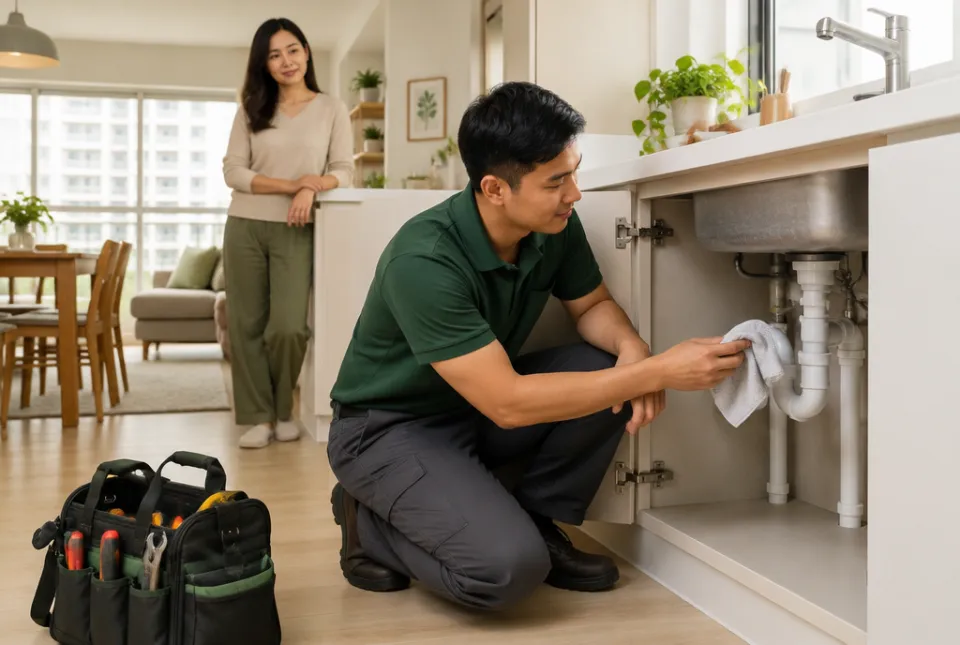
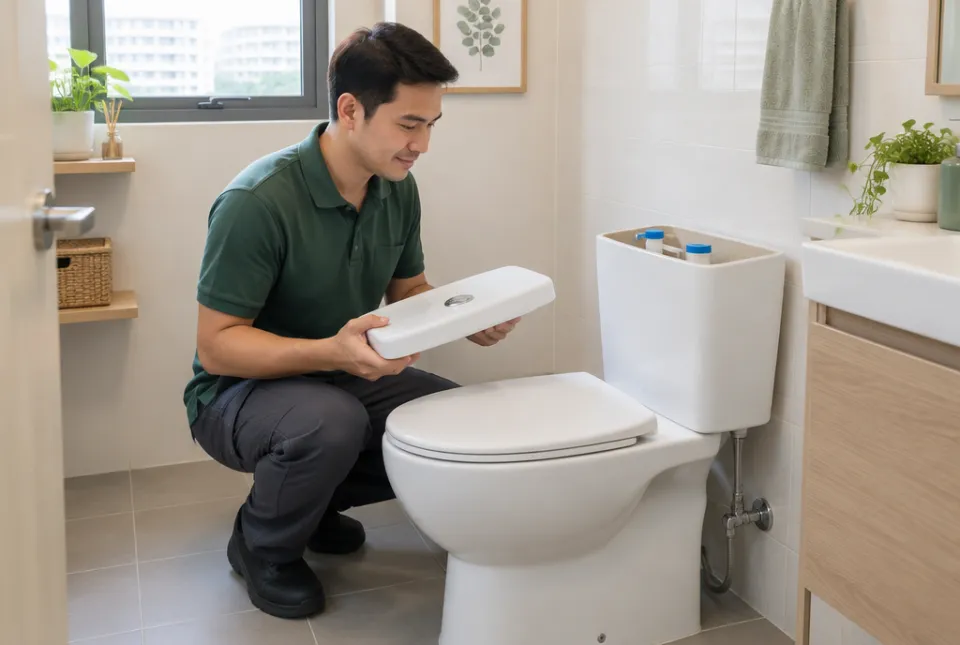
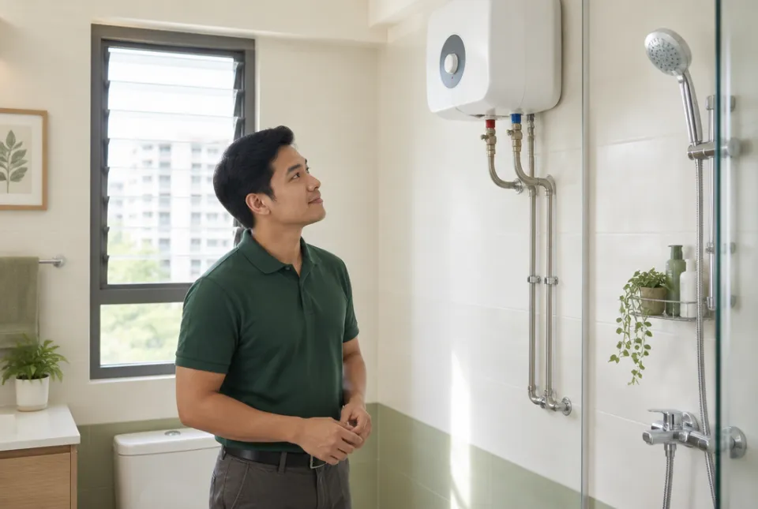
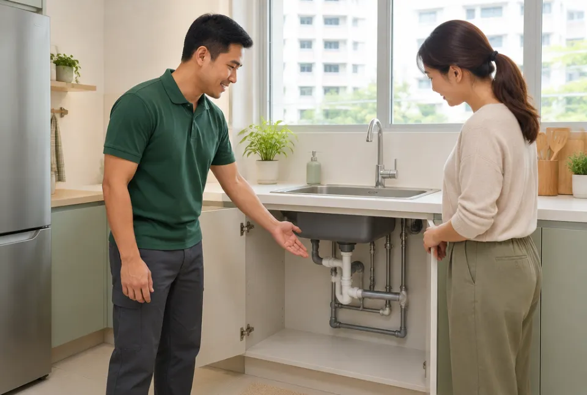

Everyday fixes.
A smoother-running home.
From the kitchen sink to the bathroom shower, find the right place to start. Choose an issue to explore the details.
Service scope is illustrativeand subject to confirmation.
Leaks & dripping pipes

A damp patch, a drip under the sink, or a pipe that will not stop leaking. Start by sharing where you see the water and when the problem began.
- Visible pipe and joint leaks
- Under-sink drips
- Recurring damp patches
Useful to share: a close-up of the leak and a wider view of the surrounding area.
Enquire about this serviceBlocked sinks & drains
Slow-draining sinks and water pooling around a floor trap can interrupt the whole day. Tell us which fitting is affected and whether other drains have the same problem.
- Kitchen and bathroom sinks
- Shower and floor traps
- Recurring drainage problems
Useful to share: how long the water takes to drain and any products already used.
Enquire about this serviceTaps & shower fittings
From a tap that never quite turns off to a shower fitting ready for a refresh. Share the current fixture and, for a replacement, the model you have in mind.
- Dripping taps and mixers
- Showerheads and hoses
- Replacement fitting enquiries
Useful to share: the existing fitting, its connections and any replacement model details.
Enquire about this serviceToilet & cistern repairs

A running cistern, a weak flush or water appearing around the toilet needs the right diagnosis. A short description helps identify what should be checked.
- Running cisterns
- Flush mechanisms
- Toilet leak enquiries
Useful to share: the toilet model, where the water appears and what happens when you flush.
Enquire about this serviceWater heater enquiries

Planning a replacement or noticing a plumbing issue around your water heater? Share whether it is a storage or instantaneous model so the work can be assessed.
- Replacement planning
- Water connection concerns
- Plumbing assessment enquiries
Water heater work may involve both plumbing and electrical requirements. The appropriate qualified professional must assess the scope.
Enquire about this servicePipework & replacements

Changing a layout or looking into ageing pipework? Start with the property type, the affected area and a simple explanation of what you would like to change.
- Exposed pipe replacements
- Fixture connection enquiries
- Renovation plumbing planning
Regulated water service and sanitary plumbing works require a PUB Licensed Plumber. Confirm the required scope before work starts.
Enquire about this serviceNot sure what
the problem is?
You do not need the technical name. Tell us what is happening, and start from there.
Describe your issue
Let’s get your home
flowing again.
A little detail is all it takes to get started.